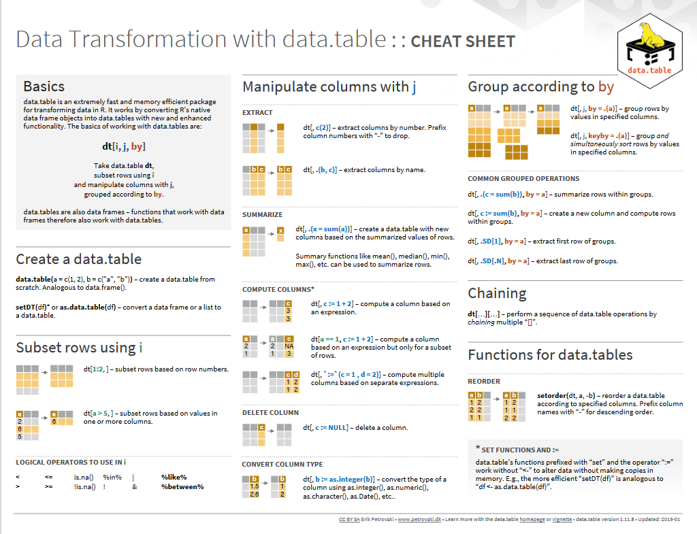
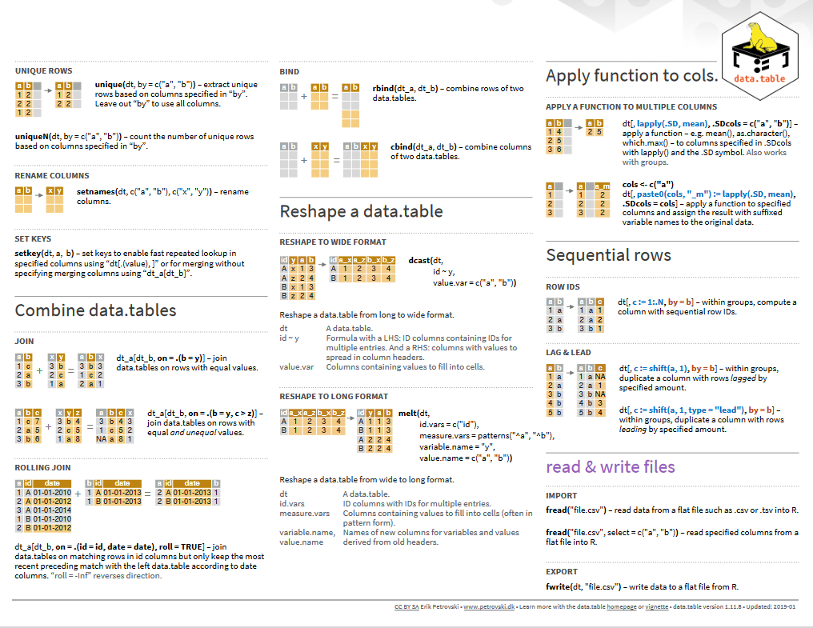
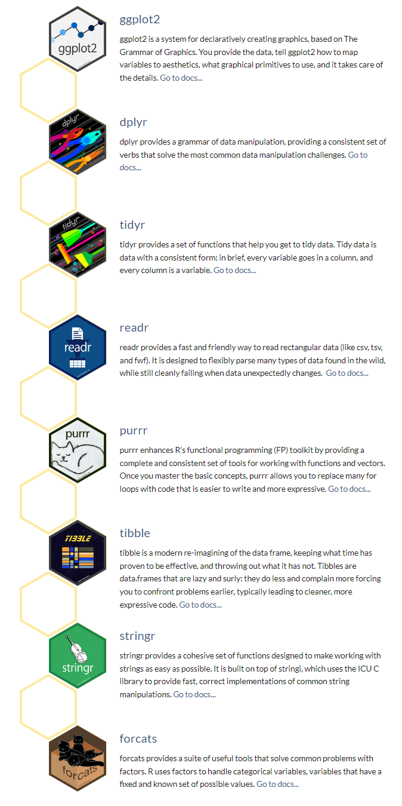
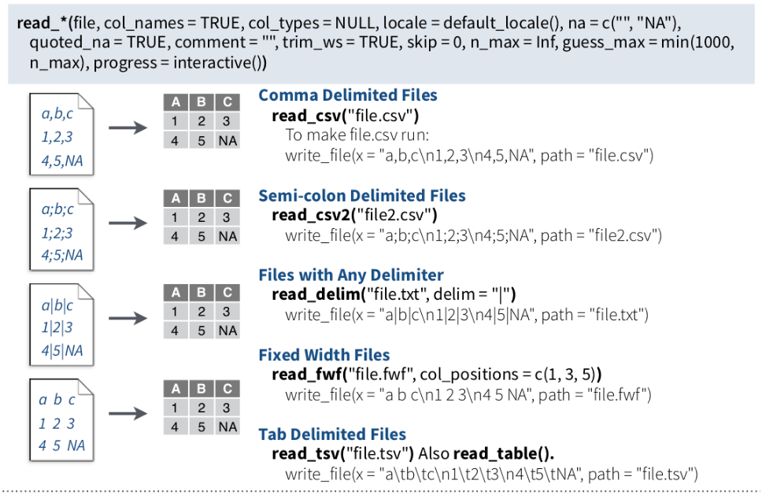
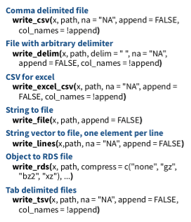

Reading or importing data into R for analysis and exporting the results as text files, Tables, or figures for report writing or publications can be done efficiently. There are multiple ways to import and export data to/from R. In this tutorial, you will learn some most common ways to read and write data with R.
First, suppose we want to read files from a specific location or write files in a folder. In that case, we will need to create or set a working directory in R. The following example shows how to set the working directory in R to the folder “Data” within the
In case you want to check the directory of your R session, the function getwd() will print the current working directory path as a string. Hence, the output is the folder where all your files will be saved.
getwd()## [1] "E:/Dropbox/GitHub/chemstat-r-github.io"If you want to change the working directory in R you just need to call the setwd() function, specifying as argument the path of the new working directory folder.
myWD<-setwd("E:\\Dropbox\\GitHub\\chemstat-r-github.io") # Set working directory
myWD<-setwd("E:/Dropbox/GitHub/chemstat-r-github.io") # Equivalent
myWD## [1] "E:/Dropbox/GitHub/chemstat-r-github.io"Remember that you must use the forward slash / or double backslash \ in R! The Windows format of single backslash will not work.
The files under in a directory can check using dir() function
# dir()All data set use in this exercise could be found here.
The easiest form of data to import into R is a simple text file, and this will often be acceptable for problems of small or medium scale. The primary function to import from a text file is read.table(). However, scan() function could be used to scan and read data. It is usually used to read data into vector or list or from file in R Language.
## Create a data folder
dataFolder<-"E:/Dropbox/GitHub/chemstat-r-github.io/Data/"data.txt<-read.table(paste0(dataFolder,"test_data.txt"), header= TRUE)
#data.txt<-read.table("test_data.txt", header= TRUE)
head(data.txt)## ID treat var rep PH TN PN GW ster DTM SW GAs STAs
## 1 Low As BR01 1 84.0 28.3 27.7 35.7 20.5 126.0 28.4 0.762 14.60
## 2 Low As BR01 2 111.7 34.0 30.0 58.1 14.8 119.0 36.7 0.722 10.77
## 3 Low As BR01 3 102.3 27.7 24.0 44.6 5.8 119.7 32.9 0.858 12.69
## 4 Low As BR06 1 118.0 23.3 19.7 46.4 20.3 119.0 40.0 1.053 18.23
## 5 Low As BR06 2 115.3 16.7 12.3 19.9 32.3 120.0 28.2 1.130 13.72
## 6 Low As BR06 3 111.0 19.0 15.3 35.9 14.9 116.3 42.3 1.011 15.97names(data.txt)## [1] "ID" "treat" "var" "rep" "PH" "TN" "PN" "GW" "ster"
## [10] "DTM" "SW" "GAs" "STAs"The sample data can be in comma-separated values (CSV) format. Each cell inside such data file is separated by a special character, which is usually a comma, although other characters can be used. Reading data from a CSV file is made easy by the read.csv(), an extension of read.table(). It facilitates the direct import of data from CSV files.
data.csv<-read.csv(paste0(dataFolder,"test_data.csv"), header= TRUE)
#head(data.csv)
names(data.csv)## [1] "ID" "treat" "var" "rep" "PH" "TN" "PN" "GW" "ster"
## [10] "DTM" "SW" "GAs" "STAs"One of the best ways to read an Excel file is to export it to a comma-delimited file and import it using the method above. Alternatively, we can use the xlsx package to access Excel files. The first row should contain variable/column names.
# install.packages("xlsx") # Install "xlsx" package
# Load xlsx package
library(xlsx)# Import Sheet 1, from a excel file
data.xlsx <-xlsx::read.xlsx(paste0(dataFolder,"test_data.xlsx"), 1)
#data.xlsx <-read.xlsx("test_data.xlsx", 1)
names(data.xlsx)## [1] "ID" "treat" "var" "rep" "PH" "TN" "PN" "GW" "ster"
## [10] "DTM" "SW" "GAs" "STAs"To export data and save to your local drive, you need the file path and an extension. First of all, the path is the location where the data will be stored.
The popular R base functions for writing data are write.table(), write.csv(), write.csv2() and write.delim() functions.
First of all, let create a data frame that we will going to export into a text/CSV file.
Variety =c("BR1","BR3", "BR16", "BR17", "BR18", "BR19","BR26",
"BR27","BR28","BR29","BR35","BR36") # create a text vector
Yield = c(5.2,6.0,6.6,5.6,4.7,5.2,5.7,
5.9,5.3,6.8,6.2,5.8) # create numerical vector
rice.data= data.frame(Variety, Yield)
head(rice.data)## Variety Yield
## 1 BR1 5.2
## 2 BR3 6.0
## 3 BR16 6.6
## 4 BR17 5.6
## 5 BR18 4.7
## 6 BR19 5.2write.csv(rice.data, paste0(dataFolder, "rice_data.csv"), row.names = F) # no row names
#write.csv(rice.data, "rice_data.csv", row.names = F) # no row namesWe can export data into Excel from R workspace using writexl package which allows us to export data as an Excel file into xlsx format.
# install writexl
#install.packages("writexl")
library(writexl)
write.xlsx(rice.data, paste0(dataFolder, "rice_data.xlsx"))
#write.xlsx(rice.data, "rice_data.xlsx")If you want to share the data from R as Objects and share those with your colleagues through different systems so that they can use it right away into their R workspace. These objects are of two types .rda/.RData which can be used to store some or all objects, functions from R global environment.
The save() function allows us to save multiple objects into our global environment:
save(rice.data, Variety, Yield, file= paste0(dataFolder,"rice_data.RData"))
#save(rice.data, Variety, Yield, file="rice_data.RData")The R-package data.tabel a improved version data.frame of R-base function. It has following advantages:
• concise syntax: fast to type, fast to read • fast speed • memory efficient
# Install data.table
# install.packages("data.table")
library(data.table)fread: This function is capable of reading CSV files quickly and conveniently.
dt<-data.table::fread(paste0(dataFolder,"LBC_data.csv"), header= TRUE)
str(dt)## Classes 'data.table' and 'data.frame': 46605 obs. of 8 variables:
## $ FIPS : int 1001 1001 1001 1001 1001 1001 1001 1001 1001 1001 ...
## $ Year : int 1998 1999 2000 2001 2002 2003 2004 2005 2006 2007 ...
## $ SMOKING : num 27 26 26 26.5 26.6 26.3 27.1 26.4 26.3 25.6 ...
## $ POVERTY : num 11.3 11.4 10.5 10.8 10.3 10.4 11.6 10.4 12.5 10.4 ...
## $ PM25 : num 17.1 15.4 14 13.9 14.8 ...
## $ NO2 : num 1.38 1.04 1.47 1.74 1.1 0.9 1.1 1.17 0.84 0.77 ...
## $ SO2 : num 0.057 0.055 0.054 0.051 0.052 0.053 0.05 0.055 0.055 0.056 ...
## $ LBC_RATE: num 90.6 90.4 89.5 89.3 89.2 ...
## - attr(*, ".internal.selfref")=<externalptr>#dt<-fread("usa_geochemical.csv", header= TRUE) fwrite: This capable to write CSV field very fast!
data.table::fwrite(dt, paste0(dataFolder, "dt.csv"), row.names=F, quote=TRUE)Now we compare reading and writing time of fread and frwite functions with read.csv and write.csv functions.
Reading time
# base function read,csv
system.time(read.csv(paste0(dataFolder,"LBC_data.csv"), header= TRUE)) ## user system elapsed
## 0.21 0.00 0.22#fread of data.table
system.time(data.table::fread(paste0(dataFolder,"LBC_data.csv"), header= TRUE)) ## user system elapsed
## 0 0 0Writing time
# base-function write.csv
system.time(write.csv(dt, paste0(dataFolder, "DT.csv"), row.names=F))## user system elapsed
## 0.91 0.03 0.94# fwrite of data.table
system.time(data.table::fwrite(dt, paste0(dataFolder, "DT.csv"), row.names=F, quote=TRUE))## user system elapsed
## 0.07 0.00 0.03Beside two functions, we can perform several data transforming such as how to subset rows, select and compute on columns, and perform aggregations by group, etc with data.table API. Here is the cheat sheets of data.table package


Feather is a fast, lightweight, and easy-to-use binary file format for storing data frames. It has a few specific design goals:
Lightweight, minimal API: make pushing data frames in and out of memory as simple as possible
Language agnostic: Feather files are the same whether written by Python or R code. Other languages can read and write Feather files, too.
Feather is extremely fast. Since Feather does not currently use any compression internally, it works best when used with solid-state drives as come with most of today’s laptop computers. For this first release, we prioritized a simple implementation and are thus writing unmodified Arrow memory to disk.
source: https://www.rstudio.com/blog/feather/
#install.packages("feather")
library(feather)First we have to create feather data using write_feather() function
write_feather(dt, paste0(dataFolder, "LBC_data.feather"))We can read this feather data with lighting speed using read_feather function()
DT_feather <- feather::read_feather(paste0(dataFolder, "LBC_data.feather"))
str(DT_feather)## tibble [46,605 × 8] (S3: tbl_df/tbl/data.frame)
## $ FIPS : int [1:46605] 1001 1001 1001 1001 1001 1001 1001 1001 1001 1001 ...
## $ Year : int [1:46605] 1998 1999 2000 2001 2002 2003 2004 2005 2006 2007 ...
## $ SMOKING : num [1:46605] 27 26 26 26.5 26.6 26.3 27.1 26.4 26.3 25.6 ...
## $ POVERTY : num [1:46605] 11.3 11.4 10.5 10.8 10.3 10.4 11.6 10.4 12.5 10.4 ...
## $ PM25 : num [1:46605] 17.1 15.4 14 13.9 14.8 ...
## $ NO2 : num [1:46605] 1.38 1.04 1.47 1.74 1.1 0.9 1.1 1.17 0.84 0.77 ...
## $ SO2 : num [1:46605] 0.057 0.055 0.054 0.051 0.052 0.053 0.05 0.055 0.055 0.056 ...
## $ LBC_RATE: num [1:46605] 90.6 90.4 89.5 89.3 89.2 ...Compare to and wrire.csv() as well as frwite(), write_feather() is very fast:
# CSV file with base write.csv
system.time(write.csv(dt, paste0(dataFolder, "LBC_data.csv")))## user system elapsed
## 0.98 0.02 1.00# CSV file with fwrite
system.time(data.table::fwrite(dt, paste0(dataFolder, "LBC_data.csv")))## user system elapsed
## 0.06 0.00 0.03# feather file with
system.time(feather::write_feather(dt, paste0(dataFolder, "LBC_data.feather")))## user system elapsed
## 0.01 0.00 0.02The tidyverse is an collection of several R packages designed for data science. All packages share an underlying design philosophy, grammar, and data structures. (source:https://www.tidyverse.org/ )
The core tidyverse includes the packages that you’re likely to use in everyday data analyses. As of tidyverse 1.3.0, the following packages are included in the core tidyverse:

Install all the packages in the tidyverse by running install.packages(“tidyverse”).
Run library(tidyverse) to load the core tidyverse and make it available in your current R session.
# install.packages("tidyverse")
library(tidyverse)As well as readr, for reading flat files, the tidyverse package installs a number of other packages for reading data:
DBI for relational databases. (Maintained by Kirill Müller.) You’ll need to pair DBI with a database specific backends like RSQLite, RMariaDB, RPostgres, or odbc. Learn more at https://db.rstudio.com.
haven for SPSS, Stata, and SAS data.
httr for web APIs.
readxl for .xls and .xlsx sheets.
googlesheets4 for Google Sheets via the Sheets API v4.
googledrive for Google Drive files.
rvest for web scraping.
jsonlite for JSON. (Maintained by Jeroen Ooms.)
xml2 for XML
A tibble, or tbl_df, is the latest method for reimagining of modern data-frame and It keeps all the crucial features regarding the data frame. Since R is an old language, and some things that were useful 10 or 20 years ago now get in your way. It’s difficult to change base R without breaking existing code, so most innovation occurs in tibble() data-frame with tibble package.
Key features of Tibble
A Tibble never alters the input type.
With Tibble, there is no need for us to be bothered about the automatic changing of characters to strings.
Tibbles can also contain columns that are the lists.
We can also use non-standard variable names in Tibble.
We can start the name of a Tibble with a number, or we can also contain space.
To utilize these names, we must mention them in backticks.
Tibble only recycles the vectors with a length of 1.
Tibble can never generate the names of rows.
source: https://www.educative.io/answers/what-is-tibble-versus-data-frame-in-r
We can use following functions readr package to import tabular data into R as tibble:

read_csv() and read_tsv() from readr package are special cases of the more general read_delim(). They’re useful for reading the most common types of flat file data, comma separated values and tab separated values, respectively. read_csv2() uses ; for the field separator and , for the decimal point. This format is common in some European countries.
For example, importing CSV file:
df.chem_01<-readr::read_csv(paste0(dataFolder,"PAHdata.csv"))
str(df.chem_01)## spc_tbl_ [20 × 23] (S3: spec_tbl_df/tbl_df/tbl/data.frame)
## $ Subject : chr [1:20] "P1" "P3" "P4" "P5" ...
## $ Napthalene : num [1:20] 0.899 3.626 3.392 3.577 4.491 ...
## $ 1-Methyl Napthalene : num [1:20] 4.97 4.69 3.54 4.75 5.11 ...
## $ 2-Methyl Napthalene : num [1:20] 2.15 3.93 1.7 2.94 4 ...
## $ Acenapthylene : num [1:20] 0.0131 3.0151 1.3859 3.3943 6.6593 ...
## $ 1,2 Dimethyl napthalene : num [1:20] NA NA 1.24 2.64 2.14 ...
## $ 1,6 Dimethyl Napthalene : num [1:20] 0.7 2.64 1.38 1.1 2.26 ...
## $ Fluorene : num [1:20] 2.25 7.35 7.16 8.44 9.24 ...
## $ 1,6,7 Trimethylnapthalene: num [1:20] 5.1 6.79 6.52 4.68 6.46 ...
## $ Anthracene : num [1:20] 10.17 9.64 22.4 26.38 20.96 ...
## $ Dibenzothiopene : num [1:20] 1.16 4.12 4.23 3.99 3.26 ...
## $ 2-Methyl Anthracene : num [1:20] 0.541 4.519 8.401 13.01 4.49 ...
## $ 1-Methylphenanthrene : num [1:20] 14.96 12.09 19.49 11.21 2.03 ...
## $ 2-Methylphenanthrene : num [1:20] 5.48 18.25 36.43 16.46 10.8 ...
## $ Pyrene : num [1:20] 4.85 14.94 10.11 26.06 20.87 ...
## $ Fluoranthene : num [1:20] 4.48 9.72 9.8 19.05 20.09 ...
## $ 1-Phenyl napthalene : num [1:20] 2.88 6.25 5.3 7.95 10.16 ...
## $ 2-Phenyl napthalene : num [1:20] 3.41 8.74 3.7 12.85 15.1 ...
## $ 1 Methylpyrene : num [1:20] 4.58 7.51 13.6 8.11 19.24 ...
## $ Benzo(c)phenanthrene : num [1:20] 3.65 7.04 5.1 3.38 8.16 ...
## $ Triphenylene/Chrysene : num [1:20] 1.74 5.14 3.16 5.71 6.75 ...
## $ Benz(a)pyrene : num [1:20] NA 2.845 NA 5.07 0.587 ...
## $ Benz(e)pyrene : num [1:20] NA 1.816 0.298 0.662 2.367 ...
## - attr(*, "spec")=
## .. cols(
## .. Subject = col_character(),
## .. Napthalene = col_double(),
## .. `1-Methyl Napthalene` = col_double(),
## .. `2-Methyl Napthalene` = col_double(),
## .. Acenapthylene = col_double(),
## .. `1,2 Dimethyl napthalene` = col_double(),
## .. `1,6 Dimethyl Napthalene` = col_double(),
## .. Fluorene = col_double(),
## .. `1,6,7 Trimethylnapthalene` = col_double(),
## .. Anthracene = col_double(),
## .. Dibenzothiopene = col_double(),
## .. `2-Methyl Anthracene` = col_double(),
## .. `1-Methylphenanthrene` = col_double(),
## .. `2-Methylphenanthrene` = col_double(),
## .. Pyrene = col_double(),
## .. Fluoranthene = col_double(),
## .. `1-Phenyl napthalene` = col_double(),
## .. `2-Phenyl napthalene` = col_double(),
## .. `1 Methylpyrene` = col_double(),
## .. `Benzo(c)phenanthrene` = col_double(),
## .. `Triphenylene/Chrysene` = col_double(),
## .. `Benz(a)pyrene` = col_double(),
## .. `Benz(e)pyrene` = col_double()
## .. )
## - attr(*, "problems")=<externalptr>The write_() family of functions are an improvement to analogous function such as write.csv() because they are approximately twice as fast. Unlike write.csv(), these functions do not include row names as a column in the written file. A generic function, output_column(), is applied to each variable to coerce columns to suitable output.
We can use following functions readr package to extort tabular data from R:

readr::write_csv(df.chem_01, "df.chem_01")We can also use as_tibble() function of tibble package
df.chem_02<-tibble::as_tibble(read.csv(paste0(dataFolder,"PAHdata.csv"), check.names = FALSE))
str(df.chem_02)## tibble [20 × 23] (S3: tbl_df/tbl/data.frame)
## $ Subject : chr [1:20] "P1" "P3" "P4" "P5" ...
## $ Napthalene : num [1:20] 0.899 3.626 3.392 3.577 4.491 ...
## $ 1-Methyl Napthalene : num [1:20] 4.97 4.69 3.54 4.75 5.11 ...
## $ 2-Methyl Napthalene : num [1:20] 2.15 3.93 1.7 2.94 4 ...
## $ Acenapthylene : num [1:20] 0.0131 3.0151 1.3859 3.3943 6.6593 ...
## $ 1,2 Dimethyl napthalene : num [1:20] NA NA 1.24 2.64 2.14 ...
## $ 1,6 Dimethyl Napthalene : num [1:20] 0.7 2.64 1.38 1.1 2.26 ...
## $ Fluorene : num [1:20] 2.25 7.35 7.16 8.44 9.24 ...
## $ 1,6,7 Trimethylnapthalene: num [1:20] 5.1 6.79 6.52 4.68 6.46 ...
## $ Anthracene : num [1:20] 10.17 9.64 22.4 26.38 20.96 ...
## $ Dibenzothiopene : num [1:20] 1.16 4.12 4.23 3.99 3.26 ...
## $ 2-Methyl Anthracene : num [1:20] 0.541 4.519 8.401 13.01 4.49 ...
## $ 1-Methylphenanthrene : num [1:20] 14.96 12.09 19.49 11.21 2.03 ...
## $ 2-Methylphenanthrene : num [1:20] 5.48 18.25 36.43 16.46 10.8 ...
## $ Pyrene : num [1:20] 4.85 14.94 10.11 26.06 20.87 ...
## $ Fluoranthene : num [1:20] 4.48 9.72 9.8 19.05 20.09 ...
## $ 1-Phenyl napthalene : num [1:20] 2.88 6.25 5.3 7.95 10.16 ...
## $ 2-Phenyl napthalene : num [1:20] 3.41 8.74 3.7 12.85 15.1 ...
## $ 1 Methylpyrene : num [1:20] 4.58 7.51 13.6 8.11 19.24 ...
## $ Benzo(c)phenanthrene : num [1:20] 3.65 7.04 5.1 3.38 8.16 ...
## $ Triphenylene/Chrysene : num [1:20] 1.74 5.14 3.16 5.71 6.75 ...
## $ Benz(a)pyrene : num [1:20] NA 2.845 NA 5.07 0.587 ...
## $ Benz(e)pyrene : num [1:20] NA 1.816 0.298 0.662 2.367 ...